Read it yourself.
Margin helps university students read more books on paper. You set a small goal, log your page in about ten seconds, and then close the app and read.
Free, in the browser on your phone or laptop. The guest mode needs no email; you can save your account later. The iPhone app isn't in the App Store.
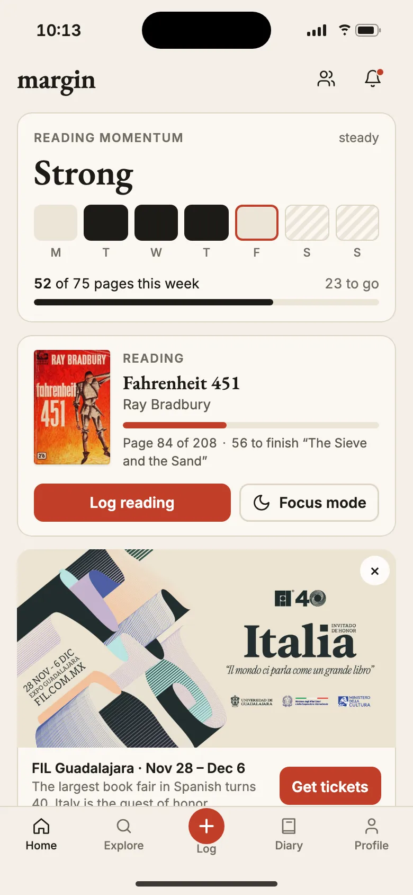
The world is built to take your attention
Reading is how you choose where it goes. These are the numbers we started from.
-
47 seconds
The average time people kept their attention on one screen before switching, across studies from 2016 to 2020. In 2003 it was about two and a half minutes.
Gloria Mark, UC Irvine. Attention Span, 2023. Interview at UC Newsroom
-
4 in 10
Nearly four in ten university students said trouble focusing is a big obstacle to their learning, along with time management.
Pearson, Student Success Survey, 2023. Pearson blog
-
71%
of 18 to 34 year olds in the US want to become better readers. The top reason people gave for not reading more: no time, at 43%.
NPR/Ipsos poll, February 2025, 2,033 adults. Ipsos release
How Margin works
Five steps, and the last one is leaving.
-
1Make a pact
Pick how many pages a day, which days you read and at what time. Ten pages take about fifteen minutes. The days you leave out are planned rest and don't count against you.
-
2Check in, ten seconds
Type the page you reached in the book. Margin works out the pages, the chapter and your week. You can log yesterday too, if you forgot.
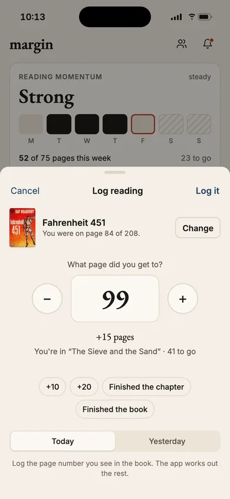
-
3Three questions per chapter
When you finish a chapter, Margin offers a short quiz about it. It's optional and it doesn't change your momentum. Remembering what you read is what makes it stay.
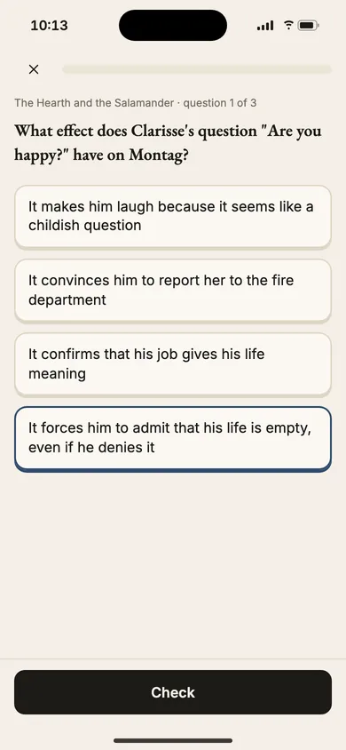
-
4Focus mode
Choose 15, 25, 45 or 60 minutes and put the phone face down. It vibrates when time's up. In the iPhone version, the apps you pick go quiet until then.
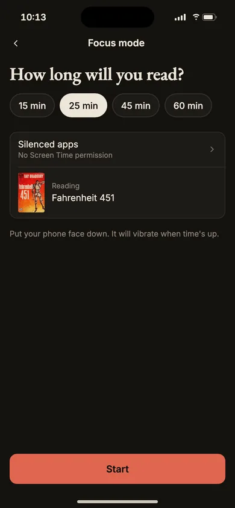
-
5Done for today
After you log you see the pages you added and your momentum, and that's it. There is no feed to scroll. Reminders come four times a week at most, with a line from your book.
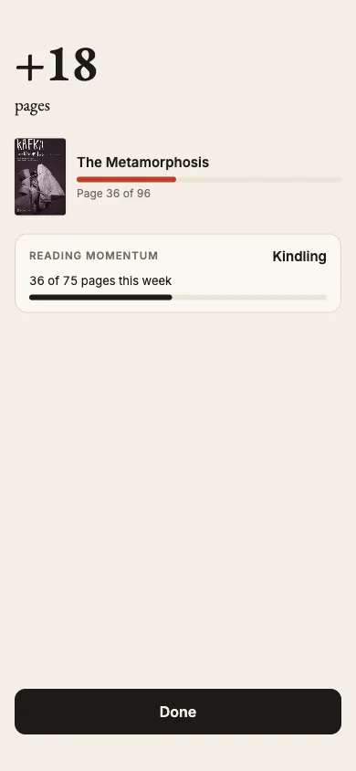
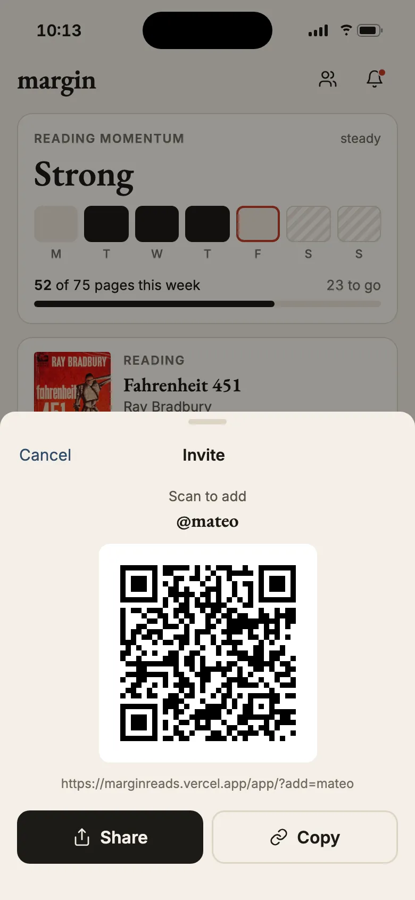
Read with your friends
Reading is easier when someone asks you how it's going. Send your invite link or let a friend scan your QR code. When they open it, they land on your profile and can add you.
Pick a book together and it becomes a shared pact. You see each other's page, and when one of you finishes a chapter or the book, the other one finds out.
- Friends see
- the book you're reading, your page and the books you finish
- They don't see
- your reflections, unless you post one as a review
- Turn it off
- with "Only me" in Settings, Privacy
Reading lists from people who read
Any reader can turn on a creator account and publish. Follow a creator and their posts show up next to your friends' activity. Posts have no like counts and videos never play on their own.
Lists
Books from the catalog, each with a short note on why it's there.
Notes
A short essay about a book, written by the person who signs it. No AI text.
Videos
A YouTube link that plays inside the post when you tap it.
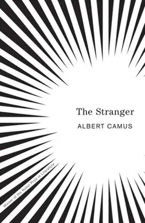
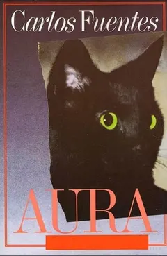
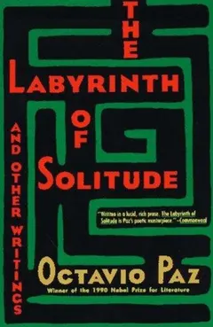
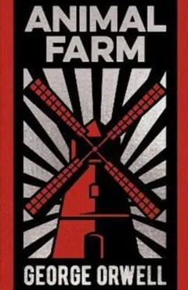
Get it on paper
Every book in Margin has a "Buy it" section with the lowest printed prices at Gandhi, checked live, and a search link for other stores. Margin earns nothing from these links.
| Book | Price |
|---|---|
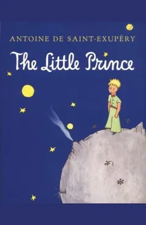 El principitoAntoine de Saint-Exupéry |
$44 MXN |
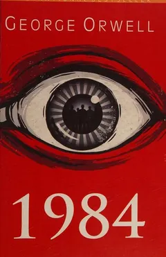 1984George Orwell |
$79 MXN |
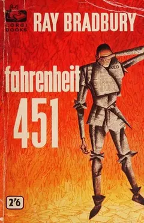 Fahrenheit 451Ray Bradbury |
$199 MXN |
Also searched from the book's page
Amazon México and El Sótano. Or skip buying: Margin can open the bookstores near you in Maps, or point you to a public library.
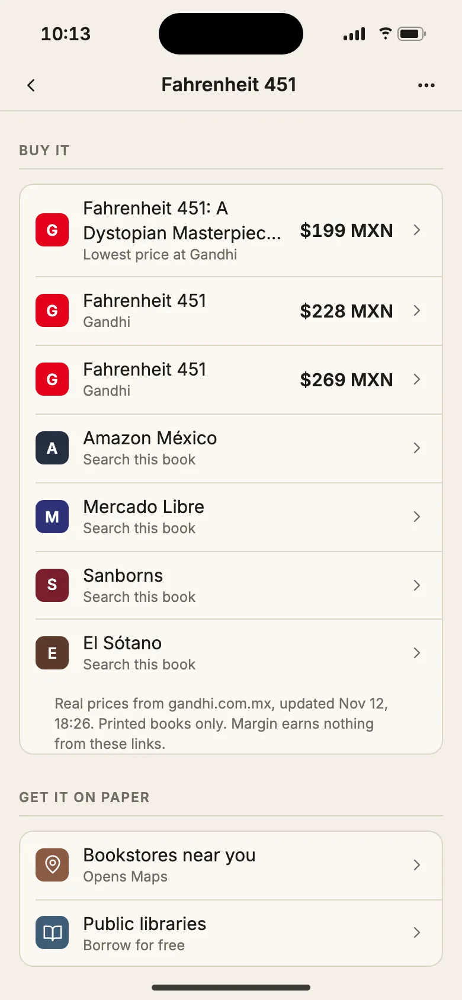
FIL Guadalajara, November 28 to December 6
The largest book fair in Spanish turns 40 this year, and Italy is the guest of honor. Margin shows it on Home until the fair ends.
fil.com.mxWhy we made Margin
When we ask our parents, our teachers and our grandparents where they learned most of what they know, they give the same answer. Books.
Then the day starts. A thousand notifications, billboards on the way, the radio, a podcast. In class, the laptop open with ten tabs and three chats. Everything asks for attention, and it gets hard to give it to one thing.
A book asks for hours of it, and gives back a long conversation with someone who thought hard about something: the Greeks, the Romans, Kafka, Rulfo, cities we've never seen.
Margin helps with the first part, which is opening the book. You do the reading.
Read it yourself.